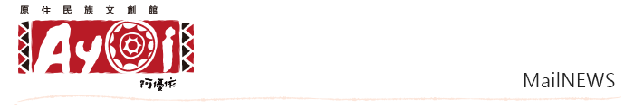
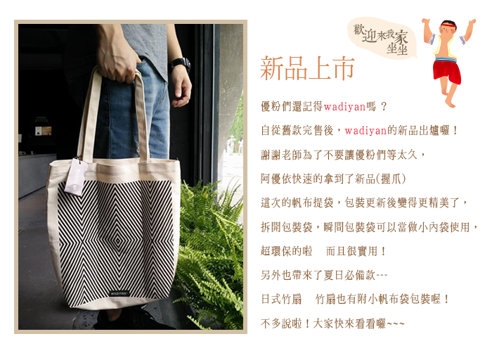
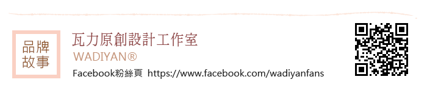
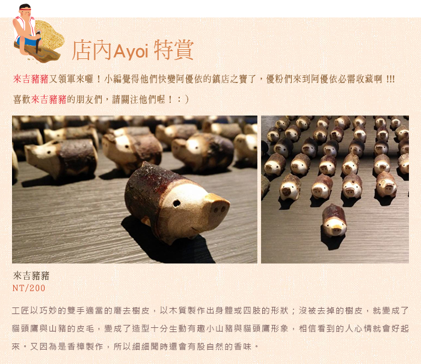
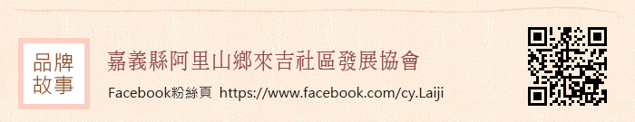
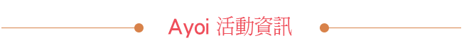
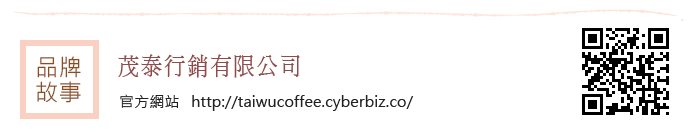
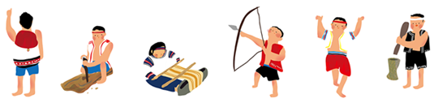

| 此郵件為系統自動傳送，請勿直接回覆此郵件。若您無法閱讀此郵件 請按此。 |
|  |
|
|  |
|

從日常生活中觀察發現，老祖先們早已將藝術融入在生活裡，展現出原住民獨特的美學概念。無論是食器、服飾、
建築等，每個角落都有了美麗又獨特的圖紋。這些圖紋不僅被賦予意義，更成為文化的象徵、族群的力量。
WADIYAN® 致力於維護原住民美學，擷取傳統圖紋中的各種元素，重新詮釋並設計出具現代感的生活雜貨，創造
新時代的原民文創美學。 |
|
|  |
|  |
來吉社區是一個以台灣原住民族鄒族為主的山區村落，位在阿里山鄉的塔山之下。相傳鄒族人之所以來到來吉定
居，是因為數百年前，有一位特富野社的獵人，因為追捕山豬，而追到了現今來吉的位置附近，他發現這裡除了動
物眾多，也適合耕種居住，就移居到此，其他族人亦慕名而來，經過數次的小型移居後，逐漸形成今日部落的樣
子。因此，來吉社區就以山豬做為部落的吉祥物，工藝品亦以山豬做為主要形象，粉絲頁也就以山豬部落為名。 |
|
|  |
試喝活動：好茶，來自於阿里山。將好茶帶給大家品嘗，嘗嘗來自阿里山的大自然風味。
活動時間：2015.8.23 (日) |
| 「如沐森」為本公司與阿里山鄒族原住民農友合作的一系列產品品牌，是真正來自阿里山有機栽種的農產品。我們藉由原住民的合作，協助許多阿里山鄒族農友朝有機耕作的方向努力，希望山上的原住民靠自己的雙手進入市場，賺取有尊嚴的收入來維繫家庭和他們獨有的文化，讓年輕人都願意、並找到一條真正可以回家的道路。這樣的原住民的返鄉計畫，目的是希望建立健全的產銷鏈，藉由產品的銷售，支持更多的原住民返鄉並擴大有機耕作面積，維持阿里山水土保育與生態多樣性，許下一代一個健康及分享的永恆承諾。 |
|
試喝活動：來自北大武山」「最好」的咖啡。一口接一口的品嘗。
活動時間：2015.8.31 (一) |
|

「卡彿魯岸」【ka-vulungan】為排灣族原住民語，原意為「最高」、「最大」或「最好的」， 後來排灣族的祖先們看到雄偉高聳的北大武山主峰，即以「卡彿魯岸」【ka-vulungan】為其命名。
本公司取其名為本公司咖啡品牌的命名，即是代表本公司所採用的咖啡豆，皆是來自大武山脈的純淨原住民地區。
而大武山是南台灣的第一高峰，亦是卑南、排灣、魯凱三族的聖山，也是排灣族祖靈居住的所在。以聖山為名，亦
代表本公司對製作高品質咖啡的堅持跟保證，意為生產在「北大武山」「最好」的咖啡。
「卡彿魯岸咖啡」的產品商標是委請排灣族藝術家馮志正先生設計，商標中所顯示的，是排灣族的「姆妮」公主，
在大武山前品嚐大武山咖啡的香醇，目的意為彰顯「姆妮」公主當年帶領族人，從東港溪溯溪而上，遷村到「吾拉
魯滋」篳路藍縷的開創精神，期許本公司亦能秉持著祖先的精神開創事業，造福族人。這個商標，可以很輕易的讓
消費者識別出，「卡彿魯岸咖啡」是產自高山、原住民栽種的好咖啡。本公司以此商標為基礎，設計整套公司的
CIS識別系統，以及一系列的精緻包裝咖啡禮盒，以達到國際級的品質跟質感。 |
|
|  |
|